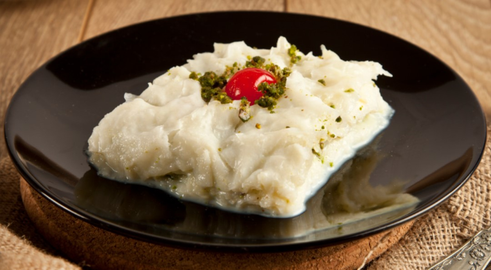

Gullac

Description
In Turkish culture, there are some certain dishes which are made on special days or occasions. We want to share another special dish made just in Ramadan month. This is a simple, but tasty dessert called gullac (güllaç in Turkish letters). The sheets are simply made of corn starch, wheat flour and water. They are soaked in sweetened warm milk, layered with walnuts and chilled.
Ingredients:
- gullac sheets
- milk
- crumbled walnuts
- ground pistachio
- pomegranate arils for garnish
Steps:
- First, prepare the milk. Put milk and sugar (and 1 tbsp rosewater if you like) in a pot and heat it until the sugar melts. Stir it occasionally. It shouldn't be too hot to touch, so let it cool a little. When it gets warm enough, we can start to make our dessert. If you use it hot, your dessert gets soggy.
- Second, make the layers in a pan. Put a gullac sheet in the pan. Wet it with the warm milk. Repeat this with five sheets.
- Third, garnish it. I always leave the garnishing part to the serving time, otherwise pomegranates and pistachio may change the color of gullac. After taking it from refrigerator, cut it in squares or rectangles, garnish and serve.
- Then put the rest five sheets one by one and wet each of them with milk. When you finish with the tenth one, pour the rest of the milk on it. They don't need to be very good in shape while arranging them in the pan.